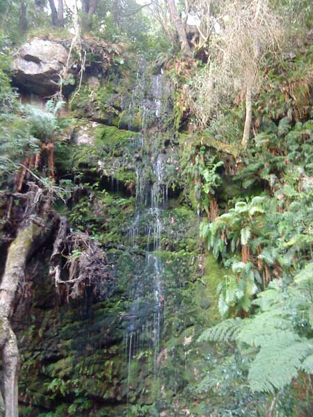

Platteklip Gorge

Cecilia Waterfall

These are the top most popular hiking trails in the Western Cape
| Trail Name | Location | Length | Difficulty |
|---|---|---|---|
| Lion's Head Summit | Table Mountain National Park | 4.3 km | Easy-Moderate |
| Cecilia Waterfall | Table Mountain National Park | 4.3 km | Moderate |
| Platteklip Gorge | Table Mountain National Park | 2.9 km | Hard |
| Paradykloof Waterfall | Stellenbosch NU | 5.0 km | Moderate |
| Kasteelspoort Trail | Table Mountain National Park | 4.7 km | Hard |
Click here to see a full list of the best trails to hike in the Western Cape: Best Trails
Click here to see a list of beginner-friendly trails to hike in the Western Cape: Beginner-friendly Trails